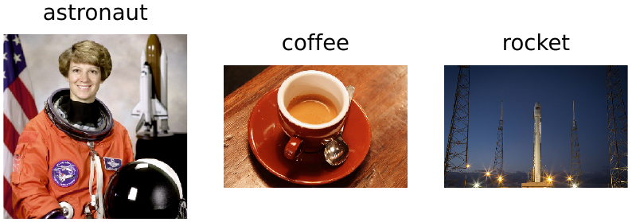
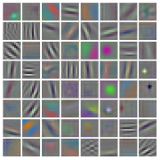
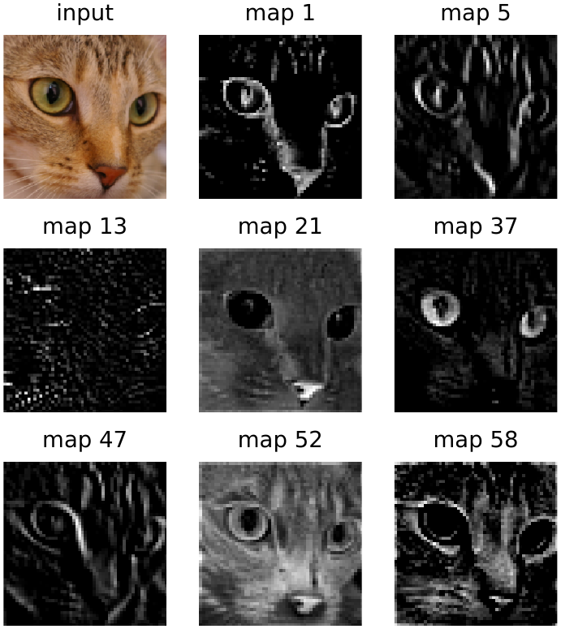
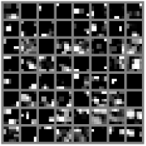

In 2012 a convolutional network called AlexNet, built by Alex Krizhevsky, Ilya Sutskever and Geoffrey Hinton, won the ImageNet competition. The task was to sort photographs into a thousand categories, and AlexNet’s error rate was far below that of every competing entry. That result is the turning point described in Part I: within a few years, almost every serious approach to computer vision was a deep neural network.
Architecturally, AlexNet is the network of the last chapter scaled up: more layers, many more kernels, color images of pixels, and 1.2 million training images. Training it ourselves would take a long time, but we do not need to. The torchvision library ships with AlexNet’s trained weights.1 In this chapter we use it to classify photographs, look inside it layer by layer, and then rebuild its forward pass by hand, in the style of the previous chapters, to prove that there is nothing in it we do not understand.
Loading a trained network
from torchvision.models import alexnet, AlexNet_Weights
weights = AlexNet_Weights.DEFAULT
net = alexnet(weights=weights).to(device)
net.eval()
print(net)AlexNet(
(features): Sequential(
(0): Conv2d(3, 64, kernel_size=(11, 11), stride=(4, 4), padding=(2, 2))
(1): ReLU(inplace=True)
(2): MaxPool2d(kernel_size=3, stride=2, padding=0, dilation=1, ceil_mode=False)
(3): Conv2d(64, 192, kernel_size=(5, 5), stride=(1, 1), padding=(2, 2))
(4): ReLU(inplace=True)
(5): MaxPool2d(kernel_size=3, stride=2, padding=0, dilation=1, ceil_mode=False)
(6): Conv2d(192, 384, kernel_size=(3, 3), stride=(1, 1), padding=(1, 1))
(7): ReLU(inplace=True)
(8): Conv2d(384, 256, kernel_size=(3, 3), stride=(1, 1), padding=(1, 1))
(9): ReLU(inplace=True)
(10): Conv2d(256, 256, kernel_size=(3, 3), stride=(1, 1), padding=(1, 1))
(11): ReLU(inplace=True)
(12): MaxPool2d(kernel_size=3, stride=2, padding=0, dilation=1, ceil_mode=False)
)
(avgpool): AdaptiveAvgPool2d(output_size=(6, 6))
(classifier): Sequential(
(0): Dropout(p=0.5, inplace=False)
(1): Linear(in_features=9216, out_features=4096, bias=True)
(2): ReLU(inplace=True)
(3): Dropout(p=0.5, inplace=False)
(4): Linear(in_features=4096, out_features=4096, bias=True)
(5): ReLU(inplace=True)
(6): Linear(in_features=4096, out_features=1000, bias=True)
)
)This time the network is a PyTorch module object rather than our list of weights, but the printout should look familiar. The features part is five convolution layers with ReLUs and three max pools; the classifier part is three fully connected layers. Three things are new. The max pools take windows two pixels apart, so neighboring windows overlap. AdaptiveAvgPool2d((6, 6)) averages each feature map down to whatever size it arrives at; for the images AlexNet expects, the maps are already and it does nothing. And there is dropout, which we will come back to shortly. The first convolution uses 64 kernels of pixels with a stride of 4, meaning the kernel jumps four pixels at a time, which shrinks the large input image quickly.
The call to net.eval() matters, and we will see why below. The thousand category names come with the weights:
labels = weights.meta['categories']
print(len(labels))
print(labels[:5])
print(labels[281:286])1000 ['tench', 'goldfish', 'great white shark', 'tiger shark', 'hammerhead'] ['tabby', 'tiger cat', 'Persian cat', 'Siamese cat', 'Egyptian cat']
Preparing an image
AlexNet was trained on images prepared in a particular way, and a new image must be prepared in exactly the same way:
from torchvision import transforms
preprocess = transforms.Compose([
transforms.Resize(256), # shorter side to 256 pixels
transforms.CenterCrop(224), # the central 224 x 224 square
transforms.ToTensor(), # to a (3, 224, 224) tensor, 0-1
transforms.Normalize(mean=[0.485, 0.456, 0.406],
std=[0.229, 0.224, 0.225]),
])The final step shifts and scales each color channel by the average and spread of that channel over the ImageNet training images, so that the inputs have roughly zero mean and unit spread, as they did during training. Feed a network differently prepared data from what it was trained on and it will still produce confident-looking answers. They will just be worse, and nothing will warn you.
What is in this picture?
Let’s show AlexNet the cat from Chapter 7:
from PIL import Image
from skimage import data
cat = Image.fromarray(data.chelsea())
x = preprocess(cat)[None].to(device) # a batch of one
print(x.shape)
with torch.no_grad():
scores = net(x)
probs = scores.softmax(dim=1)
top = probs.topk(5)
for p, i in zip(top.values[0], top.indices[0]):
print(f'{p.item():6.1%} {labels[i]}')torch.Size([1, 3, 224, 224]) 78.6% Egyptian cat 13.7% tiger cat 7.1% tabby 0.5% lynx 0.0% Persian cat
The extra [None] adds a batch axis: networks always process batches, even a batch of one. Softmax turns the thousand scores into probabilities, and topk picks out the most likely five. All five guesses are cats, and the top three are all reasonable descriptions of Chelsea.
Here is a small function to try more photographs:
def classify(image, k=3):
x = preprocess(Image.fromarray(image))[None].to(device)
with torch.no_grad():
probs = net(x).softmax(dim=1)[0]
top = probs.topk(k)
return [(labels[i], round(p.item(), 3))
for p, i in zip(top.values, top.indices)]
photos = {'astronaut': data.astronaut(), 'coffee': data.coffee(),
'rocket': data.rocket()}
for name, image in photos.items():
print(name, classify(image))astronaut [('dumbbell', 0.268), ('puck', 0.062), ('neck brace', 0.052)]
coffee [('espresso', 0.973), ('consomme', 0.017), ('cup', 0.004)]
rocket [('mosque', 0.623), ('drilling platform', 0.171), ('obelisk', 0.074)]plt.figure(figsize=(4.6, 1.5))
for i, (name, image) in enumerate(photos.items()):
plt.subplot(1, 3, i + 1)
plt.imshow(image)
plt.title(name)
plt.axis('off')
plt.show()
The coffee is easy: espresso, 97 percent. The other two are instructive failures. “Astronaut” is not one of the thousand categories, so AlexNet cannot give that answer; it settles on “dumbbell,” perhaps drawn by the round shapes in the center crop, but only with 27 percent, and the probability is spread thinly over other guesses. That is a hesitant mistake, and the low number tells us so. The rocket is different: AlexNet calls it a mosque, an echo of tall white structures against the sky, with 62 percent. That is a confident mistake, and nothing in the output distinguishes it from a confident right answer. A probability is how strongly the network prefers one of its answers, not how likely it is to be right. And a classifier can only choose among the answers it was trained on; it will always choose one, however poorly any of them fits. That is worth remembering whenever you read about a system that classifies people, documents or medical images.
Why eval() matters
During training, dropout randomly sets half of the numbers flowing between the fully connected layers to zero, a different half each time, and doubles the half that survive. (In general, with a fraction dropped, the survivors are multiplied by .) The doubling keeps the expected size of every number the same as with nothing dropped, so the next layer sees inputs of the usual size either way. Dropout sounds destructive, but it stops the network from relying on any single unit, which reduces overfitting. When we use the network, though, we want all of it working, and we want the same answer every time. Because of the doubling during training, simply switching dropout off leaves the outputs at the right scale. The train() and eval() methods switch dropout (and a few other layers that behave differently during training) on and off:
net.train() # training mode: dropout is on
with torch.no_grad():
a, b = net(x), net(x)
print(torch.allclose(a, b))
net.eval() # evaluation mode: dropout is off
with torch.no_grad():
a, b = net(x), net(x)
print(torch.allclose(a, b))False True
In training mode, the same image gives different scores on two runs. If you forget eval(), your predictions will flicker from run to run. If you forget to switch train() back on before training, the network will train without dropout. Both mistakes are silent; we will be careful to avoid them in the next chapter.
The first layer
The 64 kernels of the first layer each have shape : one grid of weights for each color channel. That means we can draw them as small color images (Figure 15.2).
w0 = net.features[0].weight.detach().cpu() # (64, 3, 11, 11)
print(w0.shape)
f = w0.permute(0, 2, 3, 1).numpy() # (64, 11, 11, 3)
f = (f - f.min()) / (f.max() - f.min()) # rescale to 0-1
tiled = montage(f, grid_shape=(8, 8), padding_width=1, fill=(1, 1, 1),
channel_axis=-1)
plt.figure(figsize=(3.2, 3.2))
plt.imshow(tiled)
plt.axis('off')
plt.show()torch.Size([64, 3, 11, 11])

Compare these with Figure 14.1. The kernels of our small network were still mostly the random patterns they started as; these are not. There are edge detectors at every angle, some fine and some coarse, along with stripes, spots, and patches that respond to particular colors. Neuroscientists will recognize a striking resemblance to the receptive fields of neurons in the primary visual cortex. Nobody put them there. They are what a thousand categories of photographs, plus gradient descent, produced.
Applied to the cat, each kernel gives one feature map. Rather than squeeze all 64 onto the page, we show eight of them next to the crop the network actually sees (Figure 15.3):
with torch.no_grad():
maps = net.features[:2](x) # first conv + ReLU
print(maps.shape)
def brighten(maps): # scale each map to a maximum of 1
return maps / (maps.amax(dim=(1, 2), keepdim=True) + 1e-6)
crop = transforms.CenterCrop(224)(transforms.Resize(256)(cat))
picks = [1, 5, 13, 21, 37, 47, 52, 58] # eight of the 64
shown = brighten(maps[0, picks]).cpu().numpy()
plt.figure(figsize=(4.0, 4.4))
plt.subplot(3, 3, 1)
plt.imshow(crop)
plt.title('input')
plt.axis('off')
for i, k in enumerate(picks):
plt.subplot(3, 3, i + 2)
plt.imshow(shown[i], cmap='gray')
plt.title(f'map {k}')
plt.axis('off')
plt.show()torch.Size([1, 64, 55, 55])

Each map is scaled to its own maximum before drawing, so that weak responses are visible too. Some maps trace the outlines of the eyes and the head, some respond to the fine stripes of the fur, and some to broad areas of brightness or color. Changing the numbers in picks shows the others.
Deeper layers
After all five convolution layers, the image has been reduced to 256 maps of only :
with torch.no_grad():
deep = net.features(x) # all conv layers
print(deep.shape)
deep_maps = brighten(deep[0, :64]).cpu().numpy() # (64, 6, 6)
tiled = montage(deep_maps, grid_shape=(8, 8), padding_width=1, fill=0.5)
plt.figure(figsize=(3.2, 3.2))
plt.imshow(tiled, cmap='gray', vmin=0, vmax=1)
plt.axis('off')
plt.show()torch.Size([1, 256, 6, 6])

These maps no longer look like the image at all. Each one is a detector for some complex combination of shapes, colors and textures, roughly located on a coarse grid. One might fire for “furry texture here,” another for “pointed ear shape there.” The fully connected layers then combine these 9,216 numbers into the thousand class scores. This is the progression from pixels to perception that gives this book its subtitle. At the bottom are measurements of light; at the top, descriptions of objects; and in between, layer after layer of learned features, each built from the ones below.
AlexNet by hand
How much of this machinery is actually new? Almost none. Here is AlexNet’s entire forward pass, written with the same functions we have been using, reading the weights and biases directly out of the trained modules:
import torch.nn.functional as F
c = [net.features[i] for i in (0, 3, 6, 8, 10)] # the conv layers
fc = [net.classifier[i] for i in (1, 4, 6)] # the linear layers
def alexnet_by_hand(x, show=False):
x = F.relu(F.conv2d(x, c[0].weight, c[0].bias, stride=4, padding=2))
x = F.max_pool2d(x, kernel_size=3, stride=2)
if show: print(x.shape)
x = F.relu(F.conv2d(x, c[1].weight, c[1].bias, padding=2))
x = F.max_pool2d(x, kernel_size=3, stride=2)
if show: print(x.shape)
x = F.relu(F.conv2d(x, c[2].weight, c[2].bias, padding=1))
x = F.relu(F.conv2d(x, c[3].weight, c[3].bias, padding=1))
x = F.relu(F.conv2d(x, c[4].weight, c[4].bias, padding=1))
x = F.max_pool2d(x, kernel_size=3, stride=2)
if show: print(x.shape)
x = F.adaptive_avg_pool2d(x, 6).flatten(start_dim=1)
if show: print(x.shape)
x = F.relu(F.linear(x, fc[0].weight, fc[0].bias))
x = F.relu(F.linear(x, fc[1].weight, fc[1].bias))
return F.linear(x, fc[2].weight, fc[2].bias)
with torch.no_grad():
mine = alexnet_by_hand(x, show=True)
theirs = net(x)
print(torch.allclose(mine, theirs, atol=1e-4))
print(labels[mine.argmax()])torch.Size([1, 64, 27, 27]) torch.Size([1, 192, 13, 13]) torch.Size([1, 256, 6, 6]) torch.Size([1, 9216]) True Egyptian cat
Our hand-built version produces the same scores as the real thing. (Dropout does not appear, because in evaluation mode it does nothing.) Five convolutions, seven ReLUs, three max pools, an average pool and three matrix multiplications: that is all AlexNet is. What makes it work is not the code but the weights. There are a lot of them:
print(sum(p.numel() for p in net.parameters()))61100840
Sixty-one million numbers, found by gradient descent on 1.2 million images.
Saving and loading weights
Since the weights are everything, saving a network means saving its weights. A module’s state_dict() is a dictionary from layer names to weight tensors, and torch.save writes it to a file. To load it, create a network of the same shape, whose weights start out random, and pour the saved weights in:
torch.save(net.state_dict(), 'data/alexnet.pt')
copy = alexnet() # random weights
copy.load_state_dict(torch.load('data/alexnet.pt', map_location=device))
copy = copy.to(device).eval()
with torch.no_grad():
print(torch.allclose(copy(x), net(x)))True
That is how trained networks are shared: alexnet(weights=...) did exactly this with a file downloaded from the internet. In the next chapter we will save weights of our own, after teaching AlexNet a new task.
Notes
Strictly,
torchvision’s AlexNet is a slightly later, simplified version that Krizhevsky described in 2014 (“One weird trick for parallelizing convolutional neural networks”), designed to run on a single graphics card. The 2012 network was split across two cards and had 96 and 256 kernels in its first two layers where this one has 64 and 192, and it included a step called local response normalization that was later dropped. The two are the same design and perform about equally well.↩︎